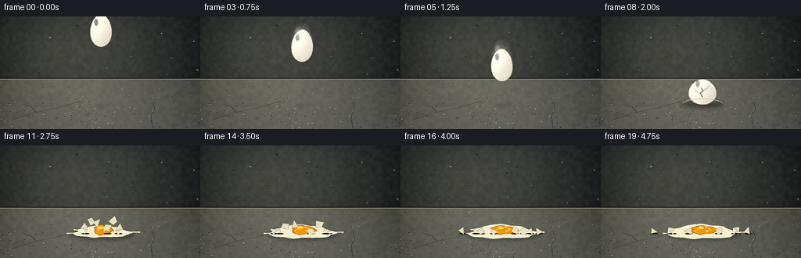
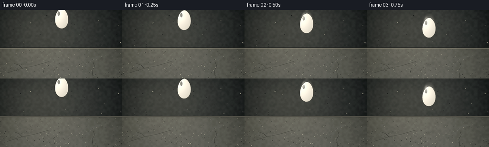

CODING AGENTS AS PIXEL WORLD MODELS
traex/GPT-5.6-Sol · material_0013
点击播放 · 原生 RGB 像素
逐轮保存的候选
回放视频、检查图与代码变化。
每份候选均可单独播放。实际图片检查记录在下方工具轨迹中。
候选 01播放与检查图
点击播放 · 原生 RGB 像素


展开代码变化
--- 上一保存版本
+++ 本次保存版本
@@ -0,0 +1,228 @@
+from pathlib import Path
+import math
+import numpy as np
+from PIL import Image, ImageDraw, ImageFilter
+import artifact_io
+
+# Procedural cinematic macro shot of an egg falling onto concrete.
+W,H,N = 256,144,20
+S=4
+WW,HH=W*S,H*S
+rng=np.random.default_rng(23117)
+
+def sc(v): return int(round(v*S))
+def pts_scaled(pts): return [(sc(x),sc(y)) for x,y in pts]
+
+def background():
+ yy,xx=np.mgrid[0:HH,0:WW]
+ # Dark concrete wall and foreground floor separated by a shallow horizon.
+ horizon=79*S
+ wall=np.zeros((HH,WW,3),dtype=np.float32)
+ wall_base=np.array([45,49,49],np.float32)
+ floor_base=np.array([84,86,81],np.float32)
+ wall[:]=wall_base
+ floor=(yy-horizon)/max(1,(HH-horizon))
+ floor=np.clip(floor,0,1)
+ arr=wall
+ for c in range(3):
+ arr[:,:,c]=np.where(yy<horizon,
+ wall_base[c] + 5*(1-yy/max(horizon,1)),
+ floor_base[c] + 15*floor)
+ # Cinematic light from upper left and edge vignette.
+ glow=np.exp(-(((xx-84*S)/(116*S))**2+((yy-48*S)/(92*S))**2))*26
+ vign=19*((xx-WW/2)/(WW/2))**2 + 8*((yy-HH/2)/(HH/2))**2
+ arr += glow[:,:,None]*np.array([1.0,.93,.78])[None,None,:]
+ arr -= vign[:,:,None]
+ # fine, fixed concrete grain
+ noise=rng.normal(0,2.5,(HH,WW,1))
+ coarse=np.asarray(Image.fromarray(rng.integers(0,256,(36,64),dtype=np.uint8)).resize((WW,HH),Image.Resampling.BICUBIC),dtype=np.float32)
+ coarse=(coarse-128)[:,:,None]*.035
+ arr+=noise+coarse
+ im=Image.fromarray(np.uint8(np.clip(arr,0,255)),'RGB').convert('RGBA')
+ d=ImageDraw.Draw(im,'RGBA')
+ # horizon seam and wall mottling
+ d.line([(0,sc(79)),(WW,sc(79))],fill=(25,28,28,120),width=sc(1))
+ d.line([(0,sc(80)),(WW,sc(80))],fill=(135,132,119,45),width=sc(1))
+ for _ in range(34):
+ x=float(rng.uniform(0,W)); y=float(rng.uniform(7,76)); r=float(rng.uniform(.2,1.1))
+ col=(20,22,22,int(rng.integers(8,24))) if rng.random()<.55 else (180,178,160,int(rng.integers(5,14)))
+ d.ellipse((sc(x-r),sc(y-r*.4),sc(x+r),sc(y+r*.4)),fill=col)
+ # floor aggregate and tiny pits, compressed in depth
+ for _ in range(220):
+ y=float(rng.uniform(82,143)); x=float(rng.uniform(0,256)); depth=(y-79)/65
+ r=float(rng.uniform(.12,.62)*(0.4+depth))
+ if rng.random()<.58: col=(29,31,29,int(rng.integers(18,44)))
+ else: col=(196,193,173,int(rng.integers(10,28)))
+ d.ellipse((sc(x-r),sc(y-r*.40),sc(x+r),sc(y+r*.40)),fill=col)
+ # worn hairline cracks and a diagonal slab mark
+ d.line(pts_scaled([(15,132),(47,122),(72,117),(103,108)]),fill=(41,42,39,75),width=sc(.55))
+ d.line(pts_scaled([(46,122),(40,116),(29,112)]),fill=(39,40,38,48),width=sc(.45))
+ d.line(pts_scaled([(195,143),(193,128),(198,118),(195,110)]),fill=(40,42,39,52),width=sc(.55))
+ return im
+
+BASE=background()
+
+def egg_points(cx,cy,rx=15.0,ry=21.0,squash=1.0, tilt=0.0):
+ out=[]
+ ct,st=math.cos(tilt),math.sin(tilt)
+ for i in range(96):
+ a=2*math.pi*i/96
+ yy=-ry*math.cos(a)*squash
+ # bottom is subtly broader than top
+ f=.84 + .19*((yy/(ry*squash)+1)/2)
+ xx=rx*math.sin(a)*f/max(squash,.62)
+ out.append((cx+xx*ct-yy*st,cy+xx*st+yy*ct))
+ return out
+
+def draw_egg(im,cx,cy,squash=1.0,tilt=0.0,opacity=255):
+ # Local shadowed gradient clipped to egg silhouette.
+ mask=Image.new('L',(WW,HH),0)
+ ImageDraw.Draw(mask).polygon(pts_scaled(egg_points(cx,cy,squash=squash,tilt=tilt)),fill=opacity)
+ y,x=np.mgrid[0:HH,0:WW]
+ nx=(x/S-(cx-5))/22; ny=(y/S-(cy-7))/30
+ shade=np.clip(232 - 20*nx - 17*ny + 18*np.exp(-(nx*nx+ny*ny)*3),180,255)
+ egg=np.empty((HH,WW,4),dtype=np.uint8)
+ egg[:,:,0]=np.clip(shade+12,0,255); egg[:,:,1]=np.clip(shade+8,0,255); egg[:,:,2]=np.clip(shade-3,0,255); egg[:,:,3]=np.asarray(mask)
+ layer=Image.fromarray(egg,'RGBA')
+ ld=ImageDraw.Draw(layer,'RGBA')
+ # cool shaded edge and strong soft reflection
+ ld.line(pts_scaled(egg_points(cx,cy,squash=squash,tilt=tilt)),fill=(105,101,87,95),width=sc(.65),joint='curve')
+ hx=cx-5*math.cos(tilt); hy=cy-8
+ ld.ellipse((sc(hx-3.5),sc(hy-7),sc(hx+1.3),sc(hy+2)),fill=(255,255,244,105))
+ im.alpha_composite(layer)
+
+def ellipse_blur(im,box,color,blur):
+ lay=Image.new('RGBA',(WW,HH),(0,0,0,0)); ImageDraw.Draw(lay).ellipse(tuple(sc(v) for v in box),fill=color)
+ if blur: lay=lay.filter(ImageFilter.GaussianBlur(sc(blur)))
+ im.alpha_composite(lay)
+
+def irregular_blob(cx,cy,rx,ry,n=60,phase=0):
+ ps=[]
+ for i in range(n):
+ a=2*math.pi*i/n
+ wob=1 + .10*math.sin(3*a+phase)+.055*math.sin(7*a+1.3)+.03*math.sin(11*a)
+ ps.append((cx+rx*wob*math.cos(a),cy+ry*wob*math.sin(a)))
+ return ps
+
+# Deterministic shell fragments. Birth positions, velocities are in screen pixels/frame.
+shards=[
+ (-7,-2,-3.0,-4.8,[(0,-5),(5,-2),(3,5),(-4,3)]),
+ (7,-2,3.3,-5.6,[(-4,-4),(4,-3),(5,3),(-2,6)]),
+ (-12,0,-4.5,-2.8,[(-3,-3),(5,-1),(1,5)]),
+ (12,1,4.2,-3.2,[(-4,-2),(4,-4),(3,5)]),
+ (-3,3,-1.3,-6.4,[(-5,1),(1,-5),(5,4)]),
+ (4,4,1.5,-4.1,[(-4,-4),(4,-1),(2,6),(-4,3)]),
+ (-16,3,-2.0,-1.7,[(-3,-2),(4,-2),(2,3)]),
+ (16,4,2.3,-1.9,[(-4,-3),(4,-1),(0,4)]),
+]
+
+def render(i):
+ im=BASE.copy()
+ d=ImageDraw.Draw(im,'RGBA')
+ ground=112.0
+ # Falling whole egg: clear accelerating vertical trajectory.
+ if i<=7:
+ progress=i/7
+ cy=18 + 76*(progress**1.62)
+ cx=129 + 1.2*math.sin(i*.55)
+ tilt=.035*math.sin(i*.8)
+ # elongated motion blur becomes visible near impact
+ if i>=2:
+ speed=5+13*progress
+ for k,alpha in [(1,24),(2,12)]:
+ ghost=Image.new('RGBA',(WW,HH),(0,0,0,0))
+ draw_egg(ghost,cx,cy-k*speed*.40,squash=1.0,tilt=tilt,opacity=alpha)
+ ghost=ghost.filter(ImageFilter.GaussianBlur(sc(1.2+k*.35)))
+ im.alpha_composite(ghost)
+ # contact shadow sharpens as egg approaches
+ dist=max(0,ground-(cy+21))
+ sw=8+17*math.exp(-dist/22); sa=int(20+75*math.exp(-dist/15))
+ ellipse_blur(im,(cx-sw,ground-2,cx+sw,ground+3),(12,13,12,sa),2.1)
+ draw_egg(im,cx,cy,tilt=tilt)
+ elif i==8:
+ # first contact: shell visibly compresses and fissures
+ cx,cy=130,96.5
+ ellipse_blur(im,(103,108,157,117),(8,9,8,105),2.5)
+ draw_egg(im,cx,cy,squash=.78,tilt=.02)
+ d=ImageDraw.Draw(im,'RGBA')
+ d.line(pts_scaled([(130,103),(127,98),(131,95),(128,91)]),fill=(79,72,58,210),width=sc(.75))
+ d.line(pts_scaled([(127,98),(122,96),(120,92)]),fill=(91,82,65,175),width=sc(.55))
+ d.line(pts_scaled([(131,95),(136,92),(138,88)]),fill=(90,80,63,160),width=sc(.55))
+ # tiny hard-surface dust impulse
+ d.arc((sc(104),sc(105),sc(156),sc(119)),190,350,fill=(192,188,169,80),width=sc(.65))
+ else:
+ age=i-8 # 1..11
+ # shadow beneath spreading wet egg
+ spread=min(1,(age/8)**.65)
+ ellipse_blur(im,(96-12*spread,106,164+15*spread,121),(12,13,11,88),2.2)
+ # translucent egg-white splat, rapidly spreads then settles
+ wrx=18+25*(1-math.exp(-age/2.8)); wry=4.5+4.7*(1-math.exp(-age/3.3))
+ white=irregular_blob(130,110.6,wrx,wry,phase=.3)
+ d.polygon(pts_scaled(white),fill=(238,236,211,92))
+ d.line(pts_scaled(white+[white[0]]),fill=(255,255,239,85),width=sc(.55),joint='curve')
+ # thin fluid tendrils emphasize force of impact
+ tend=min(age,4)
+ for ang,length in [(.04,23),(2.92,20),(.45,12),(3.55,13)]:
+ grow=min(1,age/2)
+ x0=130+math.cos(ang)*wrx*.72; y0=110.5+math.sin(ang)*wry*.55
+ x1=x0+math.cos(ang)*length*grow; y1=y0+math.sin(ang)*length*.22*grow
+ d.line(pts_scaled([(x0,y0),(x1,y1)]),fill=(247,244,220,80),width=sc(1.25))
+ d.ellipse((sc(x1-1.4),sc(y1-.7),sc(x1+1.4),sc(y1+.7)),fill=(250,246,216,70))
+ # yolk pops up just after impact, then collapses into glossy puddle
+ if age<=2:
+ yr=8.3
+ yc=104.5-(2-age)*1.3
+ ellipse_blur(im,(120.5,yc-5,140.5,yc+10),(173,94,5,75),1.1)
+ d.ellipse((sc(121),sc(yc-6),sc(140),sc(yc+9)),fill=(231,152,10,245),outline=(159,91,4,210),width=sc(.65))
+ d.ellipse((sc(124),sc(yc-4.7),sc(130),sc(yc-1.1)),fill=(255,226,92,165))
+ else:
+ yrx=10.5+min(age-2,6)*1.05; yry=6.5-min(age-2,6)*.23
+ yolk=irregular_blob(131.5,108.1,yrx,yry,phase=1.5)
+ d.polygon(pts_scaled(yolk),fill=(231,149,7,245))
+ d.line(pts_scaled(yolk+[yolk[0]]),fill=(146,82,2,190),width=sc(.7),joint='curve')
+ d.ellipse((sc(124.5),sc(103.8),sc(131.5),sc(106.8)),fill=(255,222,75,155))
+ # airborne shell pieces follow ballistic paths then bounce and settle
+ for j,(ox,oy,vx,vy,poly) in enumerate(shards):
+ t=age*.78
+ px=130+ox+vx*t
+ py=105+oy+vy*t+1.08*t*t
+ # approximate floor collision at 112, damp after impact
+ if py>111.5:
+ excess=py-111.5
+ py=111.5-min(2.2,excess*.18)
+ px += vx*min(excess*.13,2.5)
+ angle=(j%2*2-1)*(.30*age+j*.16)
+ ca,sa=math.cos(angle),math.sin(angle)
+ pp=[]
+ for x,y in poly:
+ pp.append((px+x*ca-y*sa,py+x*sa+y*ca))
+ # fragment ground shadow
+ if py>105: d.ellipse((sc(px-5),sc(112),sc(px+5),sc(113.5)),fill=(17,18,16,55))
+ d.polygon(pts_scaled(pp),fill=(225,220,197,250),outline=(103,94,73,220))
+ # bright chipped inner face
+ if len(pp)>=3:
+ c0=pp[0]; c1=pp[1]
+ d.line(pts_scaled([c0,c1]),fill=(255,252,232,210),width=sc(.6))
+ # pinhead droplets and concrete dust, disappearing over time
+ for j in range(11):
+ a=j*2.399+0.3; speed=2.0+(j%4)*.7; t=min(age,5)*.70
+ px=130+math.cos(a)*speed*t
+ py=108+math.sin(a)*speed*.32*t-.82*t+0.24*t*t
+ alpha=max(0,170-age*13)
+ r=.45+(j%3)*.18
+ col=(245,189,32,alpha) if j%3==0 else (240,237,213,alpha)
+ d.ellipse((sc(px-r),sc(py-r),sc(px+r),sc(py+r)),fill=col)
+ # Subtle final grade + downsampled antialiasing
+ rgb=im.convert('RGB').resize((W,H),Image.Resampling.LANCZOS)
+ arr=np.asarray(rgb,dtype=np.float32)
+ # gentle film contrast and warm highlights
+ arr=(arr-128)*1.045+128
+ arr[:,:,0]*=1.015; arr[:,:,2]*=.975
+ return np.uint8(np.clip(arr,0,255))
+
+def main():
+ frames=np.stack([render(i) for i in range(N)],axis=0)
+ artifact_io.save(frames,Path(__file__).resolve().parent)
+
+if __name__=='__main__':
+ main()
可观测工具轨迹
实际执行的命令与返回图片。
命令 1exit 0
/bin/bash -lc "cat prompt.txt && printf '\\n---GENERATION_RULES---\\n' && cat GENERATION_RULES.md && printf '\\n---TASK_SPEC---\\n' && cat task_spec.json"
命令 2exit 0
/bin/bash -lc "find . -maxdepth 2 -type f -printf '%p\\n' | sort && printf '\\nTOOLS\\n' && command -v ffmpeg && command -v python3 && command -v blender || true"
命令 3exit 0
/bin/bash -lc 'cat artifact_io.py'
命令 4exit 0
/bin/bash -lc "python3 - <<'PY' import importlib.util for x in ['numpy','PIL','cv2','imageio','scipy']: print(x, bool(importlib.util.find_spec(x))) PY"
命令 5exit 0
/bin/bash -lc "cat > generate.py <<'PY'
from pathlib import Path
import math
import numpy as np
from PIL import Image, ImageDraw, ImageFilter
import artifact_io
# Procedural cinematic macro shot of an egg falling onto concrete.
W,H,N = 256,144,20
S=4
WW,HH=W*S,H*S
rng=np.random.default_rng(23117)
def sc(v): return int(round(v*S))
def pts_scaled(pts): return [(sc(x),sc(y)) for x,y in pts]
def background():
yy,xx=np.mgrid[0:HH,0:WW]
# Dark concrete wall and foreground floor separated by a shallow horizon.
horizon=79*S
wall=np.zeros((HH,WW,3),dtype=np.float32)
wall_base=np.array([45,49,49],np.float32)
floor_base=np.array([84,86,81],np.float32)
wall[:]=wall_base
floor=(yy-horizon)/max(1,(HH-horizon))
floor=np.clip(floor,0,1)
arr=wall
for c in range(3):
arr[:,:,c]=np.where(yy<horizon,
wall_base[c] + 5*(1-yy/max(horizon,1)),
floor_base[c] + 15*floor)
# Cinematic light from upper left and edge vignette.
glow=np.exp(-(((xx-84*S)/(116*S))**2+((yy-48*S)/(92*S))**2))*26
vign=19*((xx-WW/2)/(WW/2))**2 + 8*((yy-HH/2)/(HH/2))**2
arr += glow[:,:,None]*np.array([1.0,.93,.78])[None,None,:]
arr -= vign[:,:,None]
# fine, fixed concrete grain
noise=rng.normal(0,2.5,(HH,WW,1))
coarse=np.asarray(Image.fromarray(rng.integers(0,256,(36,64),dtype=np.uint8)).resize((WW,HH),Image.Resampling.BICUBIC),dtype=np.float32)
coarse=(coarse-128)[:,:,None]*.035
arr+=noise+coarse
im=Image.fromarray(np.uint8(np.clip(arr,0,255)),'RGB').convert('RGBA')
d=ImageDraw.Draw(im,'RGBA')
# horizon seam and wall mottling
d.line([(0,sc(79)),(WW,sc(79))],fill=(25,28,28,120),width=sc(1))
d.line([(0,sc(80)),(WW,sc(80))],fill=(135,132,119,45),width=sc(1))
for _ in range(34):
x=float(rng.uniform(0,W)); y=float(rng.uniform(7,76)); r=float(rng.uniform(.2,1.1))
col=(20,22,22,int(rng.integers(8,24))) if rng.random()<.55 else (180,178,160,int(rng.integers(5,14)))
d.ellipse((sc(x-r),sc(y-r*.4),sc(x+r),sc(y+r*.4)),fill=col)
# floor aggregate and tiny pits, compressed in depth
for _ in range(220):
y=float(rng.uniform(82,143)); x=float(rng.uniform(0,256)); depth=(y-79)/65
r=float(rng.uniform(.12,.62)*(0.4+depth))
if rng.random()<.58: col=(29,31,29,int(rng.integers(18,44)))
else: col=(196,193,173,int(rng.integers(10,28)))
d.ellipse((sc(x-r),sc(y-r*.40),sc(x+r),sc(y+r*.40)),fill=col)
# worn hairline cracks and a diagonal slab mark
d.line(pts_scaled([(15,132),(47,122),(72,117),(103,108)]),fill=(41,42,39,75),width=sc(.55))
d.line(pts_scaled([(46,122),(40,116),(29,112)]),fill=(39,40,38,48),width=sc(.45))
d.line(pts_scaled([(195,143),(193,128),(198,118),(195,110)]),fill=(40,42,39,52),width=sc(.55))
return im
BASE=background()
def egg_points(cx,cy,rx=15.0,ry=21.0,squash=1.0, tilt=0.0):
out=[]
ct,st=math.cos(tilt),math.sin(tilt)
for i in range(96):
a=2*math.pi*i/96
yy=-ry*math.cos(a)*squash
# bottom is subtly broader than top
f=.84 + .19*((yy/(ry*squash)+1)/2)
xx=rx*math.sin(a)*f/max(squash,.62)
out.append((cx+xx*ct-yy*st,cy+xx*st+yy*ct))
return out
def draw_egg(im,cx,cy,squash=1.0,tilt=0.0,opacity=255):
# Local shadowed gradient clipped to egg silhouette.
mask=Image.new('L',(WW,HH),0)
ImageDraw.Draw(mask).polygon(pts_scaled(egg_points(cx,cy,squash=squash,tilt=tilt)),fill=opacity)
y,x=np.mgrid[0:HH,0:WW]
nx=(x/S-(cx-5))/22; ny=(y/S-(cy-7))/30
shade=np.clip(232 - 20*nx - 17*ny + 18*np.exp(-(nx*nx+ny*ny)*3),180,255)
egg=np.empty((HH,WW,4),dtype=np.uint8)
egg[:,:,0]=np.clip(shade+12,0,255); egg[:,:,1]=np.clip(shade+8,0,255); egg[:,:,2]=np.clip(shade-3,0,255); egg[:,:,3]=np.asarray(mask)
layer=Image.fromarray(egg,'RGBA')
ld=ImageDraw.Draw(layer,'RGBA')
# cool shaded edge and strong soft reflection
ld.line(pts_scaled(egg_points(cx,cy,squash=squash,tilt=tilt)),fill=(105,101,87,95),width=sc(.65),joint='curve')
hx=cx-5*math.cos(tilt); hy=cy-8
ld.ellipse((sc(hx-3.5),sc(hy-7),sc(hx+1.3),sc(hy+2)),fill=(255,255,244,105))
im.alpha_composite(layer)
def ellipse_blur(im,box,color,blur):
lay=Image.new('RGBA',(WW,HH),(0,0,0,0)); ImageDraw.Draw(lay).ellipse(tuple(sc(v) for v in box),fill=color)
if blur: lay=lay.filter(ImageFilter.GaussianBlur(sc(blur)))
im.alpha_composite(lay)
def irregular_blob(cx,cy,rx,ry,n=60,phase=0):
ps=[]
for i in range(n):
a=2*math.pi*i/n
wob=1 + .10*math.sin(3*a+phase)+.055*math.sin(7*a+1.3)+.03*math.sin(11*a)
ps.append((cx+rx*wob*math.cos(a),cy+ry*wob*math.sin(a)))
return ps
# Deterministic shell fragments. Birth positions, velocities are in screen pixels/frame.
shards=[
(-7,-2,-3.0,-4.8,[(0,-5),(5,-2),(3,5),(-4,3)]),
(7,-2,3.3,-5.6,[(-4,-4),(4,-3),(5,3),(-2,6)]),
(-12,0,-4.5,-2.8,[(-3,-3),(5,-1),(1,5)]),
(12,1,4.2,-3.2,[(-4,-2),(4,-4),(3,5)]),
(-3,3,-1.3,-6.4,[(-5,1),(1,-5),(5,4)]),
(4,4,1.5,-4.1,[(-4,-4),(4,-1),(2,6),(-4,3)]),
(-16,3,-2.0,-1.7,[(-3,-2),(4,-2),(2,3)]),
(16,4,2.3,-1.9,[(-4,-3),(4,-1),(0,4)]),
]
def render(i):
im=BASE.copy()
d=ImageDraw.Draw(im,'RGBA')
ground=112.0
# Falling whole egg: clear accelerating vertical trajectory.
if i<=7:
progress=i/7
cy=18 + 76*(progress**1.62)
cx=129 + 1.2*math.sin(i*.55)
tilt=.035*math.sin(i*.8)
# elongated motion blur becomes visible near impact
if i>=2:
speed=5+13*progress
for k,alpha in [(1,24),(2,12)]:
ghost=Image.new('RGBA',(WW,HH),(0,0,0,0))
draw_egg(ghost,cx,cy-k*speed*.40,squash=1.0,tilt=tilt,opacity=alpha)
ghost=ghost.filter(ImageFilter.GaussianBlur(sc(1.2+k*.35)))
im.alpha_composite(ghost)
# contact shadow sharpens as egg approaches
dist=max(0,ground-(cy+21))
sw=8+17*math.exp(-dist/22); sa=int(20+75*math.exp(-dist/15))
ellipse_blur(im,(cx-sw,ground-2,cx+sw,ground+3),(12,13,12,sa),2.1)
draw_egg(im,cx,cy,tilt=tilt)
elif i==8:
# first contact: shell visibly compresses and fissures
cx,cy=130,96.5
ellipse_blur(im,(103,108,157,117),(8,9,8,105),2.5)
draw_egg(im,cx,cy,squash=.78,tilt=.02)
d=ImageDraw.Draw(im,'RGBA')
d.line(pts_scaled([(130,103),(127,98),(131,95),(128,91)]),fill=(79,72,58,210),width=sc(.75))
d.line(pts_scaled([(127,98),(122,96),(120,92)]),fill=(91,82,65,175),width=sc(.55))
d.line(pts_scaled([(131,95),(136,92),(138,88)]),fill=(90,80,63,160),width=sc(.55))
# tiny hard-surface dust impulse
d.arc((sc(104),sc(105),sc(156),sc(119)),190,350,fill=(192,188,169,80),width=sc(.65))
else:
age=i-8 # 1..11
# shadow beneath spreading wet egg
spread=min(1,(age/8)**.65)
ellipse_blur(im,(96-12*spread,106,164+15*spread,121),(12,13,11,88),2.2)
# translucent egg-white splat, rapidly spreads then settles
wrx=18+25*(1-math.exp(-age/2.8)); wry=4.5+4.7*(1-math.exp(-age/3.3))
white=irregular_blob(130,110.6,wrx,wry,phase=.3)
d.polygon(pts_scaled(white),fill=(238,236,211,92))
d.line(pts_scaled(white+[white[0]]),fill=(255,255,239,85),width=sc(.55),joint='curve')
# thin fluid tendrils emphasize force of impact
tend=min(age,4)
for ang,length in [(.04,23),(2.92,20),(.45,12),(3.55,13)]:
grow=min(1,age/2)
x0=130+math.cos(ang)*wrx*.72; y0=110.5+math.sin(ang)*wry*.55
x1=x0+math.cos(ang)*length*grow; y1=y0+math.sin(ang)*length*.22*grow
d.line(pts_scaled([(x0,y0),(x1,y1)]),fill=(247,244,220,80),width=sc(1.25))
d.ellipse((sc(x1-1.4),sc(y1-.7),sc(x1+1.4),sc(y1+.7)),fill=(250,246,216,70))
# yolk pops up just after impact, then collapses into glossy puddle
if age<=2:
yr=8.3
yc=104.5-(2-age)*1.3
ellipse_blur(im,(120.5,yc-5,140.5,yc+10),(173,94,5,75),1.1)
d.ellipse((sc(121),sc(yc-6),sc(140),sc(yc+9)),fill=(231,152,10,245),outline=(159,91,4,210),width=sc(.65))
d.ellipse((sc(124),sc(yc-4.7),sc(130),sc(yc-1.1)),fill=(255,226,92,165))
else:
yrx=10.5+min(age-2,6)*1.05; yry=6.5-min(age-2,6)*.23
yolk=irregular_blob(131.5,108.1,yrx,yry,phase=1.5)
d.polygon(pts_scaled(yolk),fill=(231,149,7,245))
d.line(pts_scaled(yolk+[yolk[0]]),fill=(146,82,2,190),width=sc(.7),joint='curve')
d.ellipse((sc(124.5),sc(103.8),sc(131.5),sc(106.8)),fill=(255,222,75,155))
# airborne shell pieces follow ballistic paths then bounce and settle
for j,(ox,oy,vx,vy,poly) in enumerate(shards):
t=age*.78
px=130+ox+vx*t
py=105+oy+vy*t+1.08*t*t
# approximate floor collision at 112, damp after impact
if py>111.5:
excess=py-111.5
py=111.5-min(2.2,excess*.18)
px += vx*min(excess*.13,2.5)
angle=(j%2*2-1)*(.30*age+j*.16)
ca,sa=math.cos(angle),math.sin(angle)
pp=[]
for x,y in poly:
pp.append((px+x*ca-y*sa,py+x*sa+y*ca))
# fragment ground shadow
if py>105: d.ellipse((sc(px-5),sc(112),sc(px+5),sc(113.5)),fill=(17,18,16,55))
d.polygon(pts_scaled(pp),fill=(225,220,197,250),outline=(103,94,73,220))
# bright chipped inner face
if len(pp)>=3:
c0=pp[0]; c1=pp[1]
d.line(pts_scaled([c0,c1]),fill=(255,252,232,210),width=sc(.6))
# pinhead droplets and concrete dust, disappearing over time
for j in range(11):
a=j*2.399+0.3; speed=2.0+(j%4)*.7; t=min(age,5)*.70
px=130+math.cos(a)*speed*t
py=108+math.sin(a)*speed*.32*t-.82*t+0.24*t*t
alpha=max(0,170-age*13)
r=.45+(j%3)*.18
col=(245,189,32,alpha) if j%3==0 else (240,237,213,alpha)
d.ellipse((sc(px-r),sc(py-r),sc(px+r),sc(py+r)),fill=col)
# Subtle final grade + downsampled antialiasing
rgb=im.convert('RGB').resize((W,H),Image.Resampling.LANCZOS)
arr=np.asarray(rgb,dtype=np.float32)
# gentle film contrast and warm highlights
arr=(arr-128)*1.045+128
arr[:,:,0]*=1.015; arr[:,:,2]*=.975
return np.uint8(np.clip(arr,0,255))
def main():
frames=np.stack([render(i) for i in range(N)],axis=0)
artifact_io.save(frames,Path(__file__).resolve().parent)
if __name__=='__main__':
main()
PY
python3 generate.py
ls -lh pixels.npz inspection.png index.html frames/00.png frames/19.png"命令 6exit 0
/bin/bash -lc "python3 - <<'PY'
from pathlib import Path
import json, numpy as np
from PIL import Image
spec=json.loads(Path('task_spec.json').read_text())
p=np.load('pixels.npz')['pixels']
assert p.shape==(spec['height'],spec['width'],spec['frames'])
fs=sorted(Path('frames').glob('*.png'))
assert len(fs)==spec['frames']
for f in fs:
im=Image.open(f)
assert im.mode=='RGB' and im.size==(spec['width'],spec['height'])
print('validated:', len(fs), 'RGB frames,', Image.open(fs[0]).size, '@', spec['fps'], 'fps; packed tensor',p.shape,p.dtype)
PY"视觉工具实际返回图片 1

保存候选 1 份；完成命令 6 次；可验证图片返回 1 张。原始 API 响应与完整日志保留在本地。